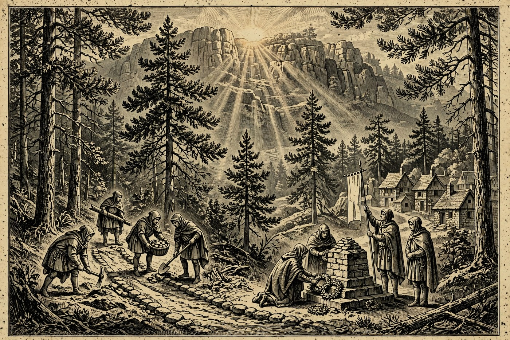
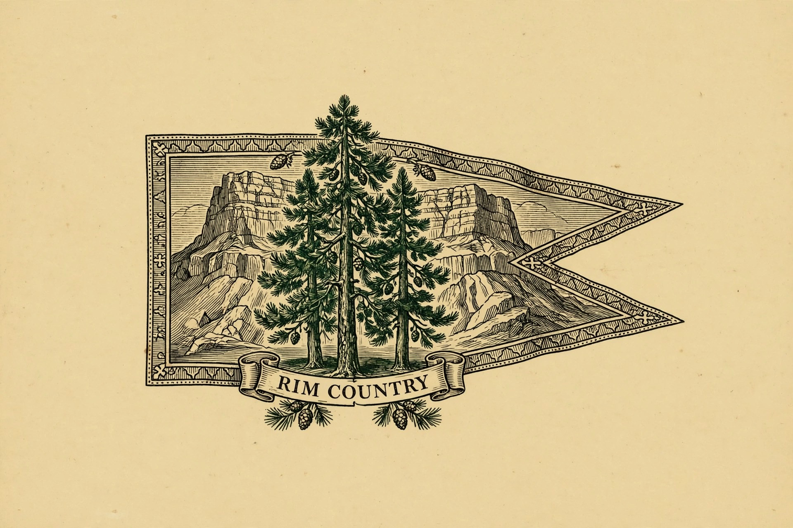

PAYSON — Hail, traveler, and a fair Tirdas to you — the sun is up over the Rim, the pines stand gold in the morning light, and the whole country is turning its mind to thanks. Volunteers are already lacing their boots for a trail-building morning in Pine, Prescott lays its wreath at the All-Service Members Memorial at 10:00 AM to open the Veterans Day observances, and tomorrow the Holds honor their veterans in earnest — free dental care here in Payson, a parade in Prescott, and a tribute in Sedona. The week then rolls merrily on to a pottery festival in Cornville, pasta night at the Elks, and, come Monday, the groundbreaking for the new Banner Payson Cancer Center — good news worth raising a mug to, by the Nine.
Happening in the Holds Today
 Payson— PPRC Committee Meeting — today 6:30–7:30 PM. The committee behind Payson’s rodeo doings opens its doors to the public this evening, and newcomers are genuinely welcome. The group runs on committee members, volunteers, and rodeo fans, and the meeting is the plainest way to see how the Hold’s biggest weekends get built. Come curious, lend a hand later, or just listen in. If you have ever wondered who hangs the banners, tonight is your night.
Payson— PPRC Committee Meeting — today 6:30–7:30 PM. The committee behind Payson’s rodeo doings opens its doors to the public this evening, and newcomers are genuinely welcome. The group runs on committee members, volunteers, and rodeo fans, and the meeting is the plainest way to see how the Hold’s biggest weekends get built. Come curious, lend a hand later, or just listen in. If you have ever wondered who hangs the banners, tonight is your night.
Pine-Strawberry— Trail Day Volunteer Build — Highway 87, Pine, today at 7:00 AM. “Don’t just use the trail — help build it” is the call from Pine-Strawberry Fuel Reduction, inviting hikers, bikers, runners, and neighbors to keep building the trails below the Mogollon Rim. Expect real outdoor work side by side with the community, not a guided hike. Bring work clothes, water, and a willing back. This is Rim Country looking after its own trails, one bright morning at a time. Camp Verde— Defensive Long Gun Fundamentals — The Compass Training Center AZ, Camp Verde, today at 9:00 AM. A fundamentals class for folks who want their long-gun skills taught properly, step by step, by instructors rather than by guesswork. Training days like this draw students from all over the Verde Valley. If marksmanship is your craft, this is a serious, structured way to practice it. Check the event page for what to bring and how to reserve a spot.
Camp Verde— Defensive Long Gun Fundamentals — The Compass Training Center AZ, Camp Verde, today at 9:00 AM. A fundamentals class for folks who want their long-gun skills taught properly, step by step, by instructors rather than by guesswork. Training days like this draw students from all over the Verde Valley. If marksmanship is your craft, this is a serious, structured way to practice it. Check the event page for what to bring and how to reserve a spot. Sedona— Creative Aging Class for 55+: The Gift of Fruits & Florals with Patricia Saxton — 15 Art Barn Rd, Sedona, today 10:00 AM–12:00 PM, and Tuesdays through December 8. A beginner-friendly art class made for folks 55 and better: paint, draw, or make collages inspired by fruits and flowers, on everything from paper and canvas to boxes and trays. Materials are included, image prompts are provided, and the guidance is generous. Small works worth keeping — or giving as gifts. A gentle, colorful way to spend a red-rock morning.— Restorative & Yin Yoga — Intimate Small-Group Session — Sundara Sacred Arts, 1785 W. State Route 89A, Sedona, today at 6:00 PM. A small-group evening practice in the slow, deep-stretch yin style, made for unwinding rather than working up a sweat. Sedona does quiet evenings beautifully, and this is one of its calmest hours. Mats down, lights low, red rocks fading outside. A fine way for guests to close a day of hiking.
Sedona— Creative Aging Class for 55+: The Gift of Fruits & Florals with Patricia Saxton — 15 Art Barn Rd, Sedona, today 10:00 AM–12:00 PM, and Tuesdays through December 8. A beginner-friendly art class made for folks 55 and better: paint, draw, or make collages inspired by fruits and flowers, on everything from paper and canvas to boxes and trays. Materials are included, image prompts are provided, and the guidance is generous. Small works worth keeping — or giving as gifts. A gentle, colorful way to spend a red-rock morning.— Restorative & Yin Yoga — Intimate Small-Group Session — Sundara Sacred Arts, 1785 W. State Route 89A, Sedona, today at 6:00 PM. A small-group evening practice in the slow, deep-stretch yin style, made for unwinding rather than working up a sweat. Sedona does quiet evenings beautifully, and this is one of its calmest hours. Mats down, lights low, red rocks fading outside. A fine way for guests to close a day of hiking. Prescott— Wreath Laying Ceremony — All-Service Members Memorial, west side of the Yavapai County Courthouse Plaza, Prescott, today at 10:00 AM. Prescott opens its Veterans Day observances with the ceremonial laying of the wreath, and cadets from Embry-Riddle Aeronautical University’s Air Force and Army ROTC stand a 24-hour Guard of the Memorial. It is a solemn, beautiful start to the two days of honor. Arrive a little early and stand with the town. Tomorrow’s parade begins on this same ground.— Line Dance Lessons — 214 S. Montezuma St, Prescott, today at 6:00 PM. When the wreath is laid and the day turns merry, Whiskey Row answers with dancing: an evening of line dance lessons a short stroll from the Courthouse Plaza. Beginners are the whole point of a lesson night, so no partner and no experience are required. Boots help, enthusiasm helps more. A joyful Prescott evening after a day of remembrance.— Raskin’s Jewelers Buying Event — Raskin’s Jewelers, 110 W. Gurley St, Prescott, starting today at 10:00 AM and running November 10–12. The downtown jeweler’s three-day buying event takes over the Gurley Street shop, a block from the Courthouse Plaza. If a drawer at home holds pieces you have meant to have looked at, this is the week the experts are in. Combine it with the wreath ceremony and make a full Prescott day of it. The plaza is lovely in this weather.
Prescott— Wreath Laying Ceremony — All-Service Members Memorial, west side of the Yavapai County Courthouse Plaza, Prescott, today at 10:00 AM. Prescott opens its Veterans Day observances with the ceremonial laying of the wreath, and cadets from Embry-Riddle Aeronautical University’s Air Force and Army ROTC stand a 24-hour Guard of the Memorial. It is a solemn, beautiful start to the two days of honor. Arrive a little early and stand with the town. Tomorrow’s parade begins on this same ground.— Line Dance Lessons — 214 S. Montezuma St, Prescott, today at 6:00 PM. When the wreath is laid and the day turns merry, Whiskey Row answers with dancing: an evening of line dance lessons a short stroll from the Courthouse Plaza. Beginners are the whole point of a lesson night, so no partner and no experience are required. Boots help, enthusiasm helps more. A joyful Prescott evening after a day of remembrance.— Raskin’s Jewelers Buying Event — Raskin’s Jewelers, 110 W. Gurley St, Prescott, starting today at 10:00 AM and running November 10–12. The downtown jeweler’s three-day buying event takes over the Gurley Street shop, a block from the Courthouse Plaza. If a drawer at home holds pieces you have meant to have looked at, this is the week the experts are in. Combine it with the wreath ceremony and make a full Prescott day of it. The plaza is lovely in this weather.
The Days Ahead
- Wed, Nov. 11— Payson Dentists Salute Our Veterans — Payson, Wednesday starting 9:00 AM. Four local dental offices offer veterans a free basic cleaning, an extraction, or a filling — just bring your VA ID. Space is limited, so call ahead: Payson Premier Dental (928-472-8400, fillings), Center Point Dental (928-472-2500, extractions), Anderson Dental Group (928-474-4581), and Mountain Family Dentistry (928-363-4149, whose offer runs all month). This is the Hold at its best — skill offered freely to those who served.— Prescott Veterans Day Parade — Downtown Prescott, Wednesday. Opening ceremonies begin at 10:30 AM at Cortez and Union streets, the parade steps off at 11:00 AM, and it pauses at 11:11 AM to mark the Armistice that ended World War I. This year’s theme is “Remember the Past. Serve the Present. Inspire the Future.” The route runs south on Cortez to Goodwin, west to Montezuma, and on to Sheldon. Come early — downtown streets close at 8:00 AM and the plaza fills fast.— Sedona Heritage Museum Veterans Day Tribute — Sedona Heritage Museum, 735 Jordan Rd, Sedona, Wednesday at 11:00 AM, free. The annual tribute fills the historic Apple Shed: a flag ceremony, patriotic music, veteran dignitaries, and a parade of American flags at the entrance assembled by the Daughters of the American Revolution. Shondra Jepperson emcees, and Col. Judith Patton gives the keynote. A warm, unhurried hour of thanks among the red rocks.
- Thu, Nov. 12— Mingle with a Veteran — Northland Pioneer College White Mountain Campus, Learning Center Lobby, 1001 W. Deuce of Clubs, Show Low, Thursday 7:00–10:00 AM. The college invites students, staff, and the whole community to an informal morning of conversation with local veterans — hear their stories, share a coffee, and say thank you in person. Everyone is welcome and no program stands between you and the talking. The best kind of Veterans Week event: simple, early, and human.
- Fri, Nov. 13— Verde Valley Pottery Festival — D.A. Ranch, Cornville, Friday through Sunday, November 13–15. Three days of clay in the Verde Valley: Friday evening is the ticketed opening, and Saturday and Sunday are free. Potters from across the region bring bowls, mugs, and sculpture to a working ranch setting — the kind of festival where you meet the maker at the wheel. Hearth guests headed to Sedona pass nearly by the gate. A sweet roll for the road and a handmade mug to bring home: a fine Friday indeed.— Jesus & Jammies — 1100 W Lake Dr, Payson, Friday at 6:00 PM. The WELL women’s gathering brings back the classic girls’ sleepover — favorite pajamas, childhood snacks, friendship bracelets, silly games, and talk until late — with faith and friendship at its heart. Tickets are $5 as a donation, and if that is a hardship you are still welcome. You do not have to know anyone to come. A cozy, laughing Friday night on the Payson side of the Rim.
- Sat, Nov. 14— 2nd Annual Pasta Night — Elks Lodge, 1206 N Beeline Hwy, Payson, Saturday at 4:00 PM. Pasta night returns to the Elks Lodge for its second year, and tickets are already out. Expect a hall full of neighbors, heaped plates, and the particular merriment of a small-town lodge supper. Last year’s first helping made it an annual — that tells you how the pasta was. Get tickets before the weekend; lodge suppers in this Hold do not stay secret long.
- Mon, Nov. 16— Banner Payson Cancer Center Groundbreaking — 807 S Ponderosa St, Payson, Monday at 10:00 AM. Shovels turn on the south side of the main building for the new Banner Payson Cancer Center — “changing the landscape of cancer treatment in Payson, one shovel at a time,” as the hosts put it. For Rim Country families, cancer care closer to home means fewer long drives down the Beeline at the hardest times. Come stand with the town for a hopeful morning. This is the week’s biggest good news, and it is ours.